Fairness and bias in predictive models
eXplainable AI
Przemysław Biecek
Machine Learning @ MIMUW 2022

Paper Book of the day
Fairness and Machine Learning
- Today we will talk about fairness measures and fairness concepts translated into the ML world. Most of these results were introduced in Fairness and Machine Learning. Limitations and Opportunities by Solon Barocas, Moritz Hardt, and Arvind Narayanan (scholars from Berkeley, Cornell, and Princeton)
Fairness and Machine Learning in numbers
- The Fairness&ML book was published online in 2018
- The paper version is still not published but the online version has already over 1000 citations
- The book introduces not only fairness measures but also a very interesting framework for critical thinking about fairness and biases in the solution development process that involves ML methods.
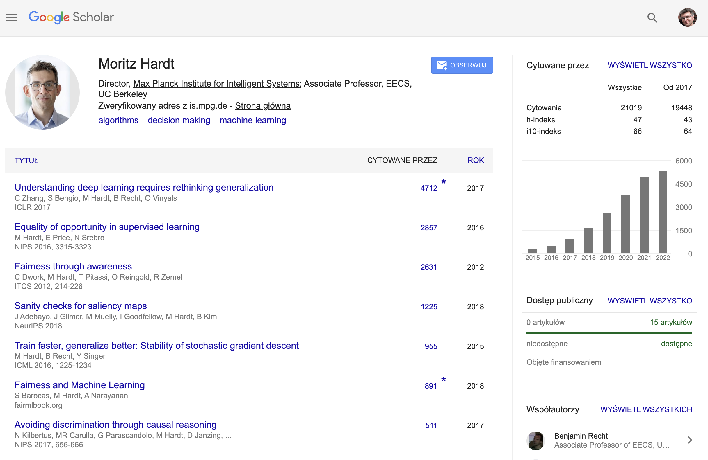
Motivation
Is discrimination an issue here?
From our first lecture:
- For example, a system showing job ads for truck drivers, presenting these ads more often to men aged 20-50. Is this an example of age and gender discrimination or an increase in the chance of getting an employee?
- Who should define who should watch the selected advertisement and when
Read more: https://www.propublica.org

Is discrimination an issue here?
A high-profile case with a bias leading to gender discrimination in Amazon’s CV screening system.
The bias learned from historical data reflected not the quality of employees but the decisions taken by recruiters!
Bias was visible in, for example, the names of secondary schools which in the UK system sometimes allow gender to be identified.
Is discrimination an issue here?
Interestingly, more women work at Amazon than at other IT giants.
No discrimination if you don’t try to measure it?
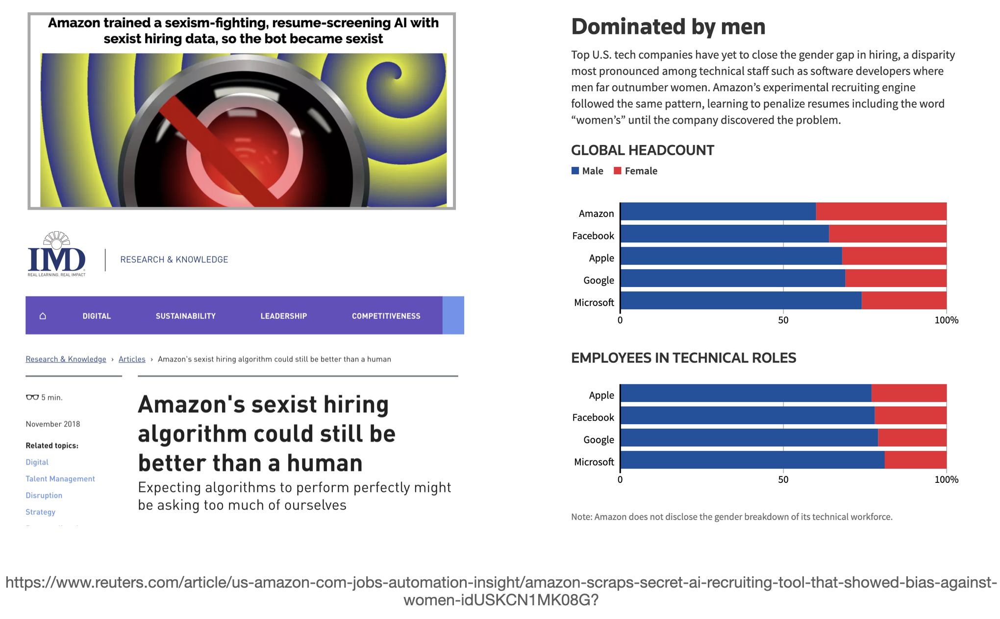
Is discrimination an issue here?
A little story, perhaps funny, but a true story. A simple hand detection system in a soap dispenser was poorly calibrated and failed to detect hands in people with darker skin colour.
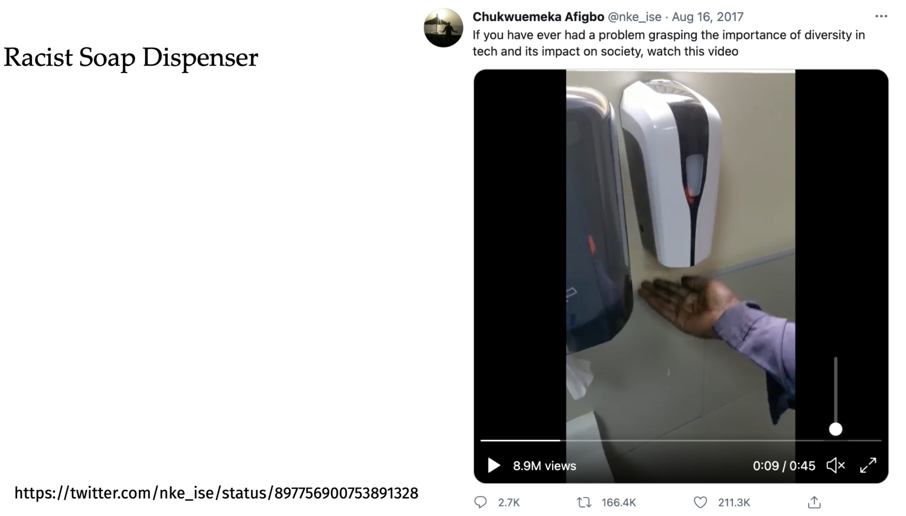
Is discrimination an issue here?
Still fun or already something serious?
Photos of Hollywood actors and actresses have different percentages of people of different skin colours than the population of the whole country (here the USA) and certainly different than the whole world.
If we build a system of judging beauty standards on such images, won’t it be naturally biased?
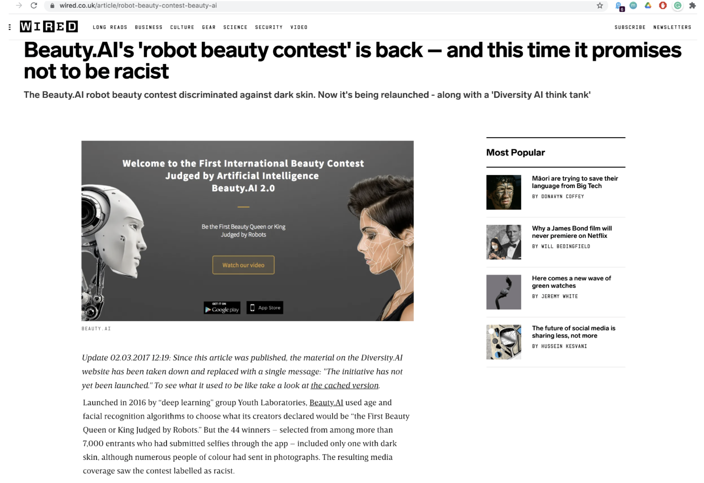
Is discrimination an issue here?
And systems for image synthesis or style transfer?
Can one be offended if a GAN intended to enhance attractiveness bleaches a person’s skin? It may sound ridiculous, but what if there are thousands of operations or dramas of oversensitive people behind such assessments?
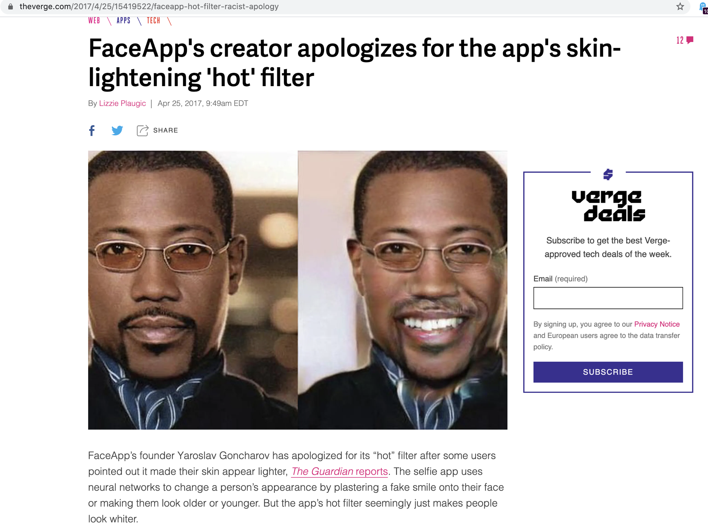
Is discrimination an issue here?
One of the best-known yet most controversial cases – is the COMPAS model supporting recidivism risk prediction.
In 2016, the Pro Publica Foundation presented an example of an analysis showing discrimination against black convicts by this model. Since then, there have been many arguments against this model as well as defending the model. We will devote more attention to it in the second part of the lecture.
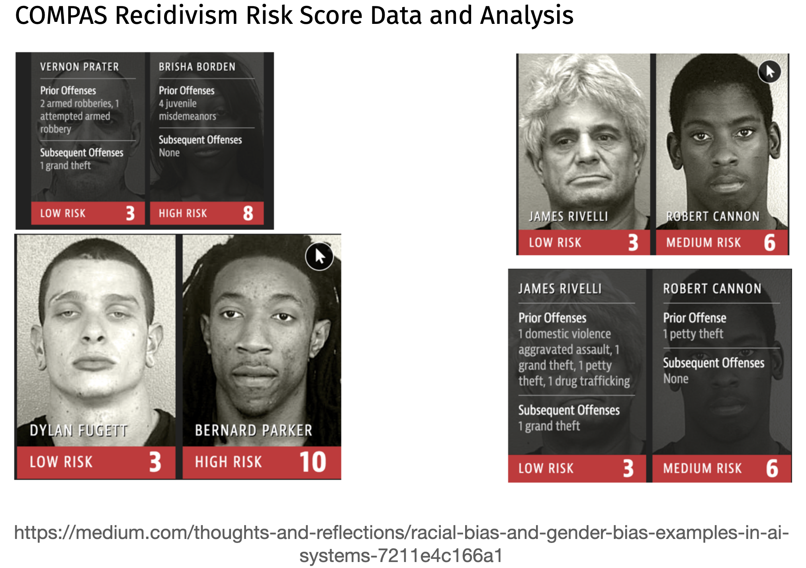
Source of bias
What does it mean to discriminate?
Concerning European law
What does it mean to discriminate?
Concerning European law
What does it mean to discriminate?
The situation in the USA is different. The highlighted factors are defined as protected attributes within the USA but not in Europe.
Different history - different problems and legislation.
Some sources of bias
Partially based on Cirillo et al, 2020.
- Historical bias. The data are correctly sampled and correspond well to the observed relationships, but due to different treatments in the past, some prejudices are encoded in the data. Think about gender and occupation stereotypes
- Representation bias. The available data is not a representative sample of the population of interest. Think about the available facial images of actors, often white men. Or genetic sequences of covid variants mostly collected in developed European countries. Or crime statistics in the regions to which the police are directed.
- Measurement bias. The variable of interest is not directly observable or is difficult to measure and the way it is measured may be distorted by other factors. Think of the results of the mathematics skills assessment (e.g. PISA) measured by tasks on computers not that widely available in some countries.
- Evaluation bias. The evaluation of the algorithm is performed on a population that does not represent all groups. Think of a lung screening algorithm tested primarily on a population of smokers (older men).
- Proxy bias. The algorithm uses variables that are proxies for protected attributes. Think of male/female-only schools where the gender effect can be hidden under the school effect.
Desirable and undesirable bias
Not every difference in treatment is harmful. Sometimes it is possible to treat the genders differently to both benefit from these differences (e.g. when choosing appropriately gender-specific drugs).
A very interesting discussion on the so-called desirable bias can be found in the article Sex and gender differences and biases in artificial intelligence for biomedicine and healthcare (2020), Cirillo et al.
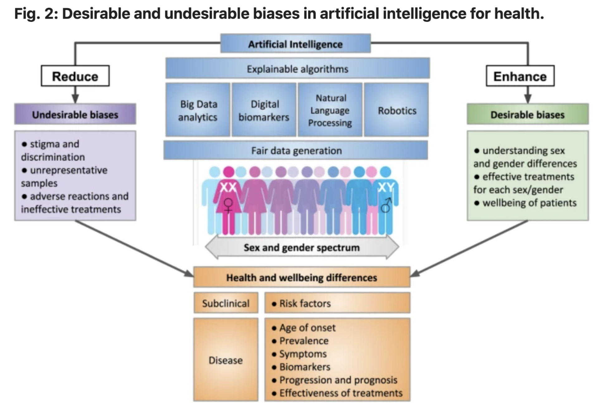
Where is bias?
Let us assume that we already know what bias is. At what point in the development of the model can it appear?
It turns out that at any point.
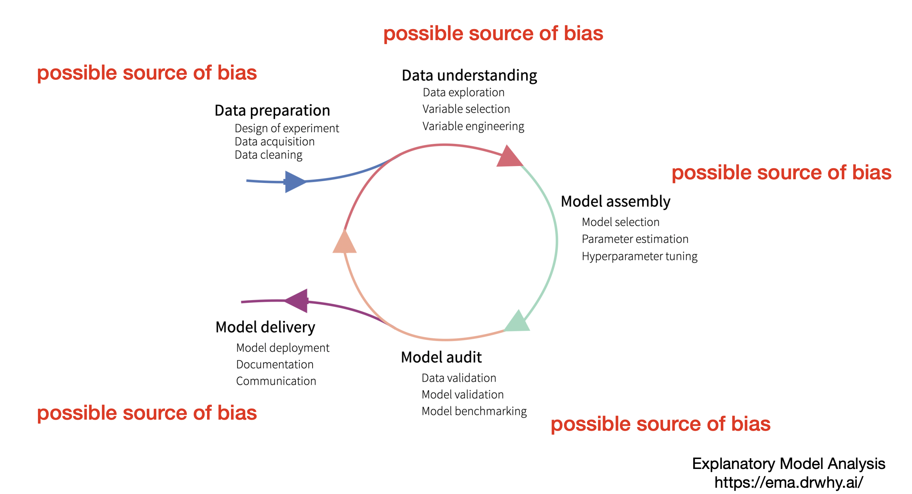
Where is bias?
A very interesting example of an unexpected bias is the StreetBumps project from Boston.
Initially, it seemed that an app on smartphones is a panacea for many of the problems of identifying spots that need repair in the city.
But…
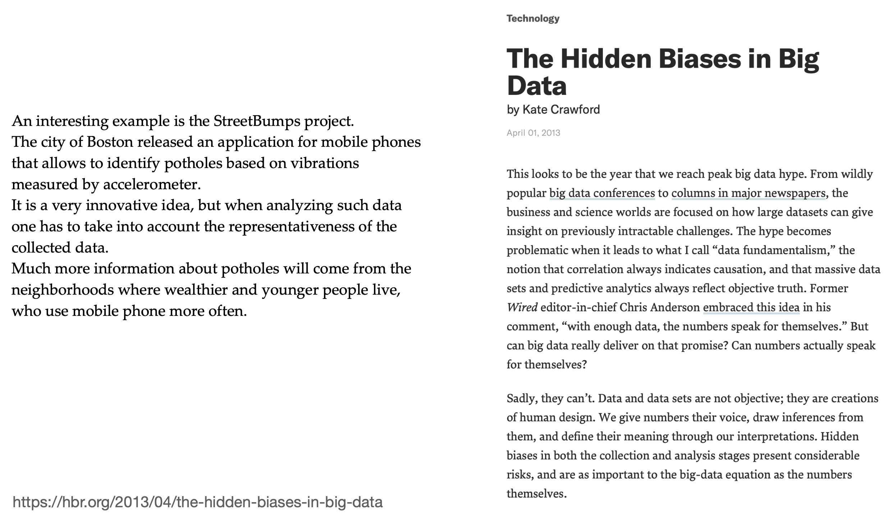
Fairness metrics
Notation
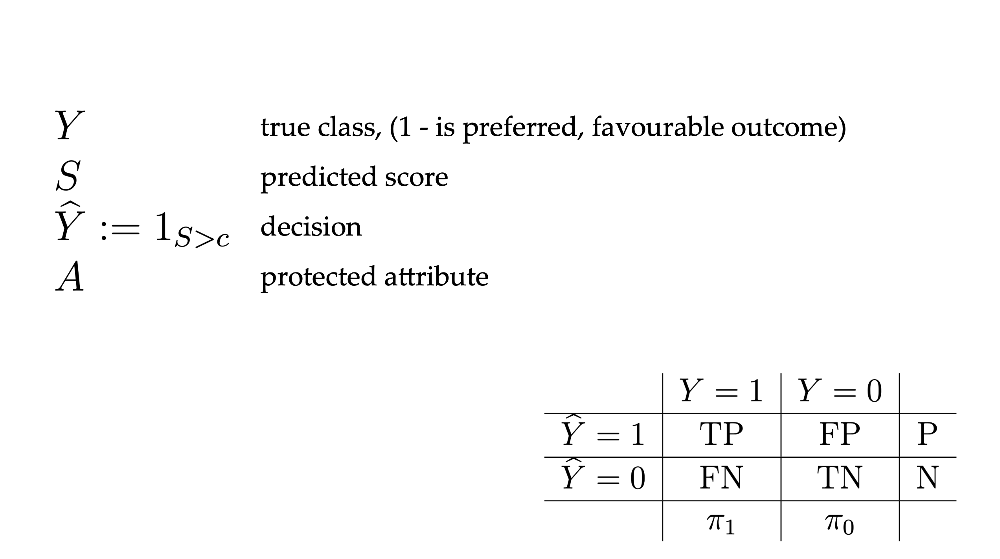
- Let \(A \in \{a,b, ...\}\) stand for protected group and values \(A \neq a\) denote membership to unprivileged subgroups while \(A = a\) membership to privileged subgroup. To simplify the notation, we will treat this as a binary variable (so \(A = b\) will denote membership to an unprivileged subgroup), but all results hold if \(A\) has a larger number of groups.
- Let \(Y \in \{0,1\}\) be a binary label (binary target = binary classification) where \(1\) is preferred, favorable outcome.
- Let \(S \in [0,1]\) be a probabilistic score of the model, and \(\hat{Y} \in \{0,1\}\) is the binarised model response, so \(\hat{Y} = 1\) when \(S \geq 0.5\), otherwise \(\hat{Y} = 0\).
Here are possible situations for the subgroup \(A=a\). We can draw up the same table for each of the subgroups.
Group fairness / statistical parity / independence / demographic parity
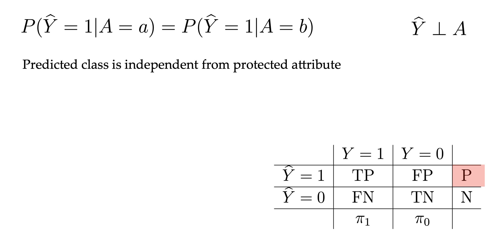
Group fairness / statistical parity / independence / demographic parity
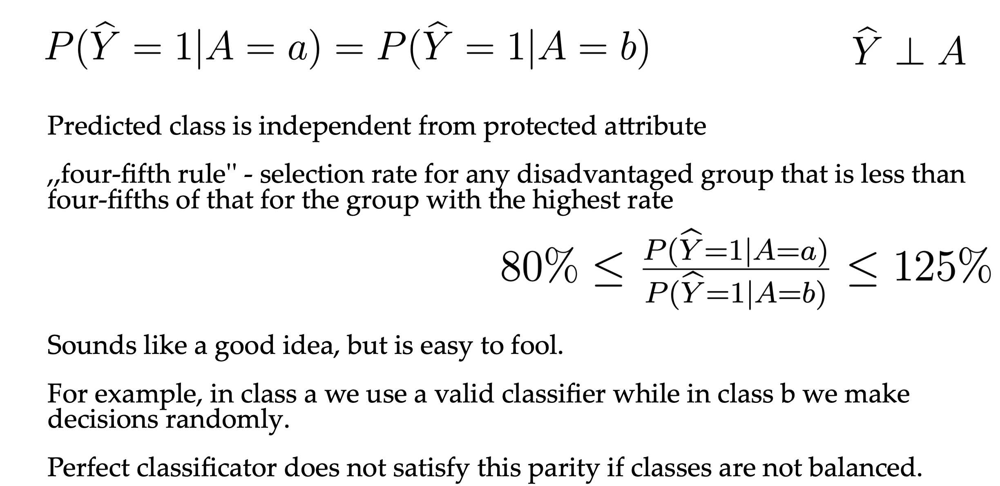
It would be hard for any classifier to maintain the same relations between subgroups. That is why some margins around the perfect agreement are needed. To address this issue, we accepted the four-fifths rule as the benchmark for discrimination rate, which states that “A selection rate for any race, sex, or ethnic group which is less than four-fifths (\(\frac{4}{5}\)) (or eighty percent) of the rate for the group with the highest rate will generally be regarded by the Federal enforcement agencies as evidence of adverse impact[…].” The selection rate is originally represented by statistical parity, but we adopted this rule to define acceptable rates between subgroups for all metrics. There are a few caveats to the preceding citation concerning the size of the sample and the boundary itself. Nevertheless, the four-fifths rule is an excellent guideline to adhere to. In the implementation, this boundary is represented by \(\varepsilon\), and it is adjustable by the user, but the default value will be 0.8. This rule is often used, but users should check if the fairness criteria should be set differently in each case.
Equal opportunity
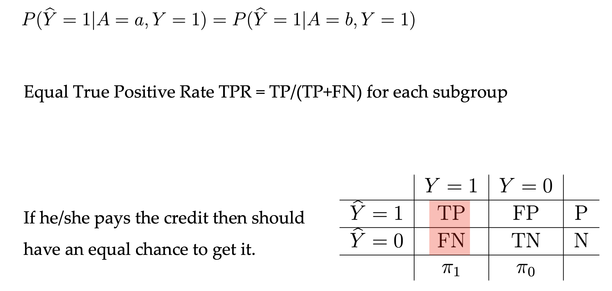
Predictive equality
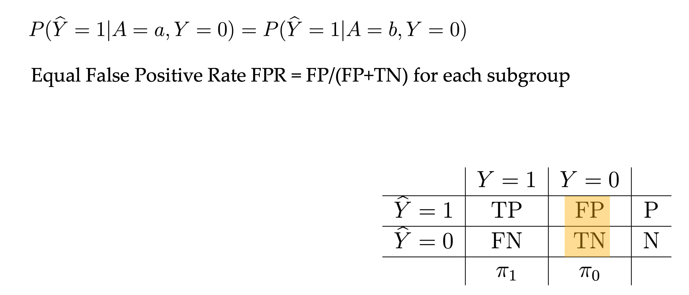
Equalized odds, Separation, Positive Rate Parity
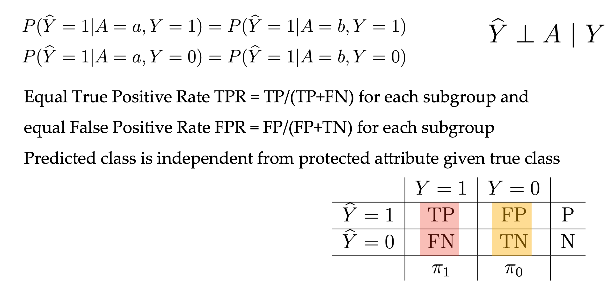
Positive Predictive Parity
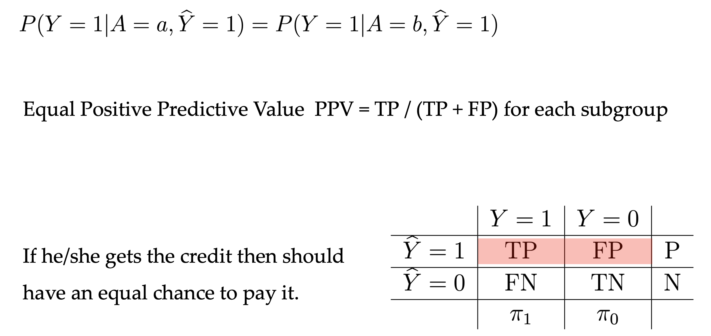
Negative Predictive Parity
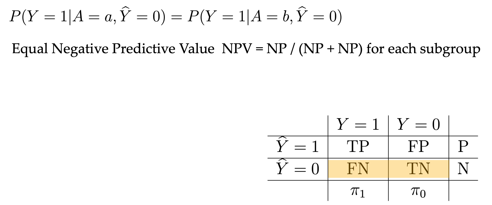
Predictive Rate Parity, Sufficiency
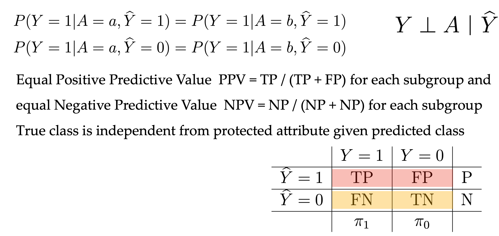
Whether to sentence a prisoner
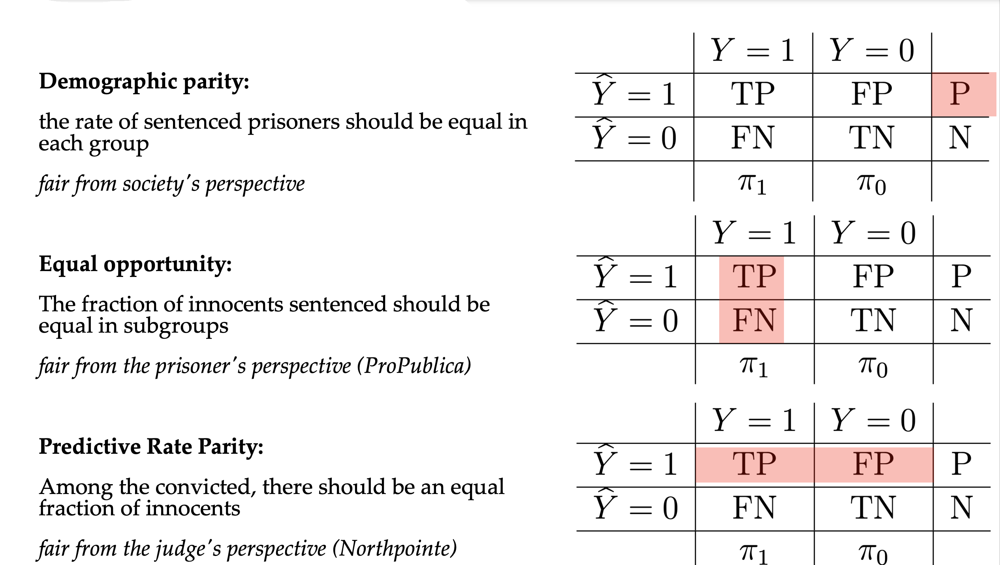
Let us illustrate the intuition behind Independence, Separation, and Sufficiency criteria using the well-known example of the COMPAS model for estimating recidivism risk. Fulfilling the Independence criterion means that the rate of sentenced prisoners should be equal in each subpopulation. It can be said that such an approach is fair from society’s perspective.
Fulfilling the Separation criterion means that the fraction of innocents/guilty sentenced should be equal in subgroups. Such an approach is fair from the prisoner’s perspective. The reasoning is the following: “If I am innocent, I should have the same chance of acquittal regardless of sub-population”. This was the expectation presented by the ProPublica Foundation in their study.
Meeting the Sufficiency criterion means that there should be an equal fraction of innocents among the convicted, similarly, for the non-convicted. This approach is fair from the judge’s perspective. The reasoning is the following: “If I convicted someone, he should have the same chance of being innocent regardless of the sub-population”. This approach is presented by the company developing the COMPAS model, Northpointe. Unfortunately, as we have already written, it is not possible to meet all these criteria at the same time.
While defining the metrics above, we assumed only two subgroups. This was done to facilitate notation, but there might be more unprivileged subgroups. A perfectly fair model would pass all criteria for each subgroup.
However tempting it is to think that all the criteria described above can be met at the same time, unfortunately, this is not possible. Barocas et al. (2019) show that, apart from a few hypothetical situations, no two of {Independence, Separation, Sufficiency} can be fulfilled simultaneously. So we are left balancing between the degree of imbalance of the different criteria or deciding to control only one criterion.
The Fairness Trade-off (the impossibility theorem)
- Except for trivial cases all these criteria cannot be satisfied jointly.
- In fact, each two out of {Sufficiency, Separation, Independence} are mutually exclusive.
Source: https://fairmlbook.org/
You can’t be fair, but you can know how unfair you are
The possible fulfilment of fairness can be summarised in a single graph - the fairness check.
The four-fifths rule (Code of Federal Regulations, 1978):
“A selection rate for any race, sex, or ethnic group which is less than four-fifths (4 / 5) (or eighty percent) of the rate for the group with the highest rate will generally be regarded by the Federal enforcement agencies as evidence of adverse impact[…].”
Mitigation
Bias mitigation strategies
- Data Pre-processing. Change data to improve model performance, for example, use subsampling or case weighting.
- Model In-processing. Modify the optimized criterion to include fairness functions, e.g. through adversarial training
- Model Post-processing. Modify the resulting model scores or final decisions, e.g., using different thresholds.
Demo
AI Fairness 360 - Demo: https://aif360.mybluemix.net/data
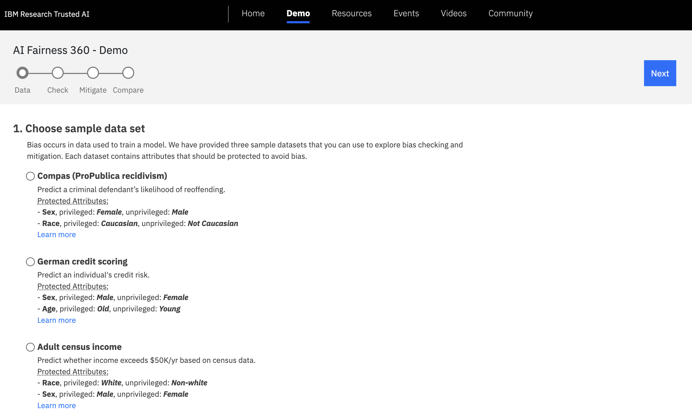
Interesting reading
Take-home message
- Note that: ethics refer to rules provided by an external source, e.g., codes of conduct in workplaces or principles in religions. Morals refer to an individual’s own principles regarding right and wrong ( source ). We are interested in the ethics of AI - the compliance of tools with external rules, e.g. AI act.
- Not every difference in the treatment of groups is discrimination. There are desirable and undesirable sources of bias.
- A number of different measures are used to evaluate the fairness of a model. And while it is impossible to satisfy them all, it is useful to know what they measure in order to choose the right measure in the right situation.
Code-examples
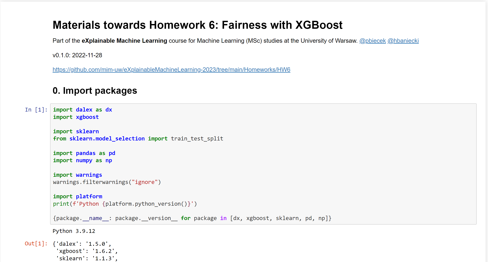

eXplainable AI – Fairness and bias – MIM UW – 2022